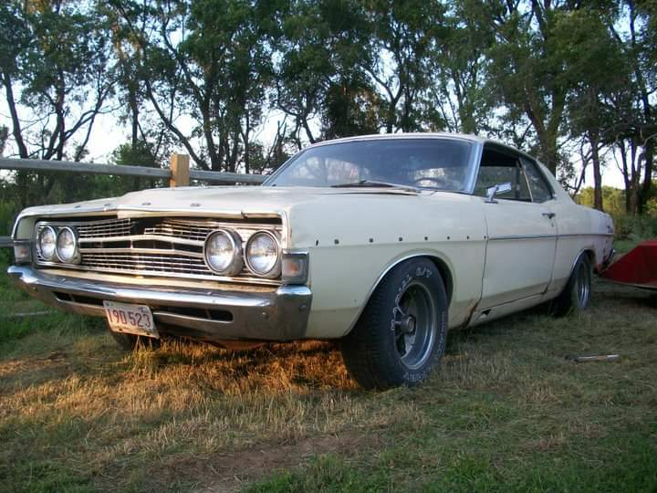

JavaScript DOM -- Document Object Model
by Chris Sewalson
Using Events to Alter the DOM. OnClick button events to select the next or
previous image.
Click the Previous or Next button to view many of the
classic cars that we have owned. They
are:
- 1967 Ford Fairlane
- 1970 Ford Torino GT
- 1973 Dodge Charger SE
- 1967 Chevy Impala
- 1967 Ford Mustange Coupe
- 1986 Pontiac Trans Am
- 1991 Pontiac FireBird Convertible
- 1972 Dodge Charger
Use the Previous or Next button to view all pictures.

Back to Index Page